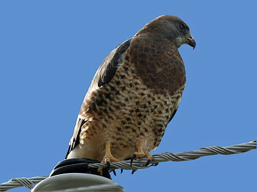

Long Distance Raptors. Pretty impressive, given the distances.
Path:North-West America → Central America → Argentina
Total Distance: 10,000 - 14,000 km
Peak Movement: September-October
Typical Altitude: 6,000–10,000 ft
Notes: They change their diet to almost exclusively grasshoppers and locusts while down south, which has them called Grasshopper Hawk too!
